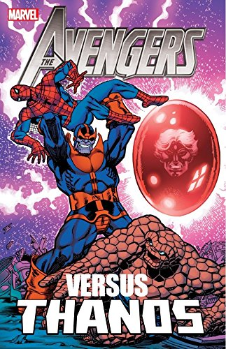

Avengers vs. Thanos Kindle Edition
Rs.3000
Collects Iron Man (1968) #55;
Captain Marvel (1968) #25-30;
Marvel Feature (1971) #12;
Daredevil (1964) #105-107;
Captain Marvel (1968) #31-32;
Avengers (1963) #125;
Captain Marvel (1968) #33;
Warlock (1972) #9-11, 15;
Avengers Annual (1967) #7;
Marvel Two -In-One Annual #2;
material from Logan's Run #6.
See Thanos's bid to become a
god and lay siege to Earth,
with only the Avengers able
to stop him.
|

Infinity War Aftermath Kindle Edition
Rs.4000
Collects Warlock & the Infinity
Watch #11-17, Silver Surfer:
Resurrection #1-4, Quasar #41-43;
material from
Marvel Comics Presents (1988),
Marvel Holiday Special #2,
Marvel Swimsuit Special #2.
The Infinity War is over —
now continue the story with
the Infinity Watch!
Avengers Annual (1967) #7;
Marvel Two -In-One Annual #2;
material from Logan's Run #6.
See Thanos's bid to become a
with only the Avengers able
|

Game Theory: A Graphic Guide
Rs.3000
Game theory is the study of how
we make a decision when the
outcome
of our moves depends on the
decisions
of someone else.
Economists Ivan and Tuvana
Pastine
explain why,
in these situations, we sometimes
cooperate,
sometimes clash, and sometimes
act in
a way that seems completely random.
|

The Time Machine (Enriched Classics) Kindle Edition
Rs.4000
The Time Traveller, a dreamer
obsessed with traveling through
time,
builds himself a time machine and,
much
to his surprise,
travels over 800,000 years into
the future.
He lands in the year 802701:
the world has been transformed
by a
society living in apparent
harmony and
bliss, but as the Traveler
stays in
the future he discovers a hidden
barbaric and depraved subterranean
class.
|

Future Visions: Original Science Fiction Inspired by Microsoft Kindle Edition
Rs.3000
Future Visions: Original Science Fiction
Inspired by Microsoft is an
anthology
of new short work from some
of the greatest
science fiction writers in the field.
These visionary stories explore
prediction
science, quantum computing,
real-time
translation, machine
learning, and much
more. The authors used inside access
to leading-edge work from Microsoft
Research as inspiration, crafting
pieces that predict the near-future
of technology--and examine
its complex relationship to
our core humanity.
|

Mind Secrets: A Science Fiction Telepathy Thriller
Rs.1000
Waking up without his memories and
hunted by Agent Cooper,
Michael finds sanctuary
with a group of
perceivers: telepaths who
sense the
thoughts and emotions of others.
Drawn into their battle to
stay free
of the cure which threatens
to strip
them of their powers,
he searches for
the person who stole his past. As
the tension between perceivers
and norms erupts into violence,
Michael pieces together
the shockin
|